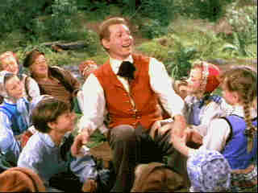

HBO/1952/112m/FS 1.33
 |
Hans weaves a tale.©HBO |
Starting out in his local village Odense where
he works as a cobbler, Hans finally musters up the courage to take the boat ride to the
big city Copenhagen. While Copenhagen is treated to the magic tales of Andersen, the
children of Odense miss their friend. When Hans realizes that his love is unrequited, he
returns to Odense and finds that is really where his heart and art thrive.
The colorful production is preserved on lovely film elements
making for a lively DVD. Some slight color pulsing exists on the original materials, but
it is not significant. The fairy tale colors of Copenhagen come to stunning life.
Multi-colored period costumes are transferred to perfection, right down to the stitching
and buttons. The mono sound is cleanly recorded with a pleasing range.
 ã1998
Stuart J. Kobak , all rights reserved.
ã1998
Stuart J. Kobak , all rights reserved.